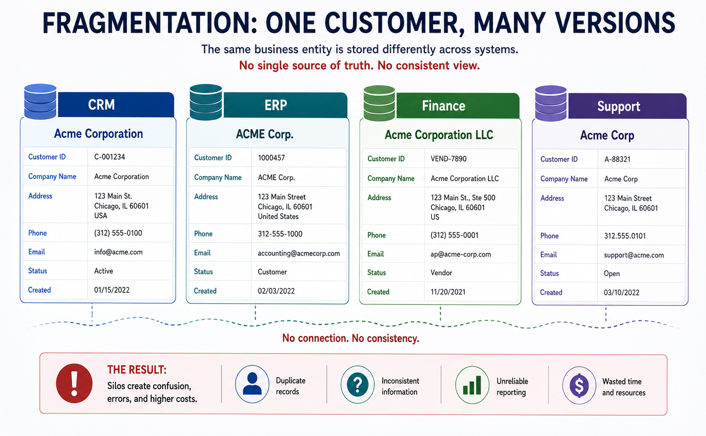
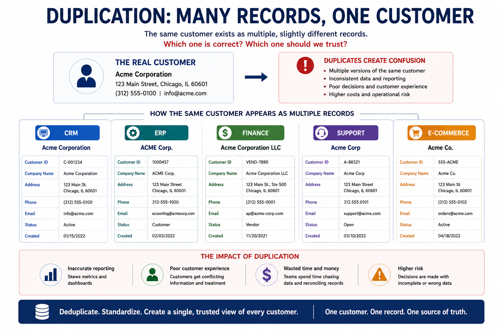

Why Organizations Struggle Without Master Data Management
Module support notes
As organizations grow, their data grows with them. New applications are introduced, teams develop local processes, and business information spreads across multiple systems. Without a shared approach to managing that information, inconsistency and duplication follow — and in the age of AI, these problems become impossible to ignore.
AI does not fix bad data
Modern AI systems depend heavily on business data — but AI does not automatically correct poor information. If customer records are duplicated or business definitions differ across systems, AI receives conflicting context. Automation behaves inconsistently, predictions become unreliable, and trust in AI outcomes decreases. AI increases the urgency of managing business information properly. Reliable AI starts with reliable business data.
Fragmentation — when systems go their own way
Organizations rarely operate from a single system. Customer information lives in CRM platforms, order data in ERP systems, and operational details in separate business applications. Over time, each system begins maintaining its own version of the same information. Updates happen independently, definitions begin to drift, and teams lose confidence in which version is correct.

Duplication — the compounding problem
Fragmentation leads to duplication. A customer might appear several times across systems with different names, identifiers, or attributes. One department updates a record while another continues using an outdated version. Reporting becomes inconsistent, and employees spend more time correcting data than using it. Decisions get made on incomplete or conflicting information.

Why MDM is the answer
These challenges explain why organizations invest in Master Data Management. MDM creates a trusted, governed view of business information that can be reused across systems and teams. Instead of managing multiple conflicting versions of the same entity, organizations establish a consistent foundation for operations, analytics, and AI.
Looking ahead
On the next page, we will look at the business outcomes that become possible when trusted data is in place — from operational efficiency to AI-readiness.